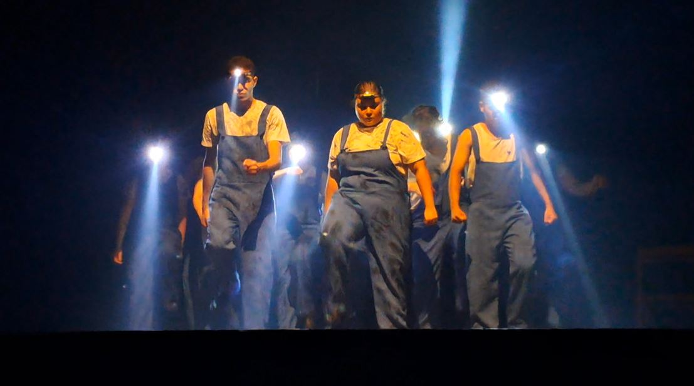
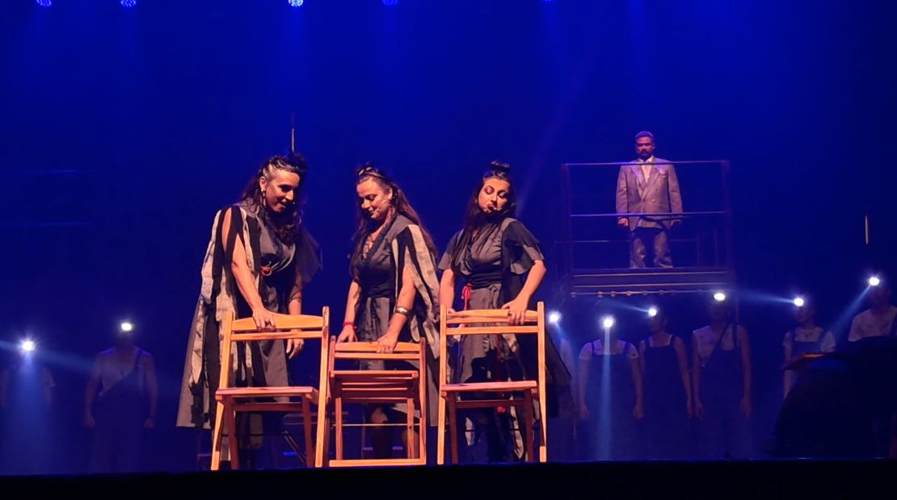

O mito de Orfeu e Eurídice ganhou uma nova leitura no palco do Teatro Municipal Severino Cabral , em Campina Grande. Apresentado no dia 26 de julho, Cidade Hades – O mito de Orfeu e Eurídice reuniu música e teatro em uma montagem inspirada no musical Hadestown .
A produção teve adaptação de Mateus Rodrigues e Rafael Oliveira , direção geral de Mateus Rodrigues , direção musical de Lemuel Guerra e produção executiva da L&L Produções , formada por Leandro Pereira e Luiza Guimarães. A divulgação do espetáculo o apresentou como uma narrativa atravessada por amor, esperança e escolhas, retomando uma história que atravessou séculos e diferentes linguagens artísticas.

Do mito ao teatro musical contemporâneo
A principal referência declarada de Cidade Hades é Hadestown , musical criado pela cantora e compositora norte-americana Anaïs Mitchell . A obra entrelaça duas narrativas da mitologia grega: a história de Orfeu e Eurídice e a relação entre Hades e Perséfone.
A trajetória de Hadestown antecede sua chegada à Broadway. O projeto começou em Vermont, nos Estados Unidos, como uma produção comunitária independente, posteriormente tornou-se um álbum e passou por apresentações e diferentes montagens até chegar à Broadway, em 2019.
Com música, letras e texto de Anaïs Mitchell, Hadestown recebeu oito Tony Awards em 2019, entre eles o de Melhor Musical.

Uma produção realizada em Campina Grande
Em Campina Grande, Cidade Hades foi realizado a partir de uma parceria entre o Coro em Canto da Universidade Federal de Campina Grande (UFCG) e a L&L Produções . Segundo informações divulgadas antes da estreia, o projeto teve origem depois de uma série de masterclasses de teatro musical realizadas no início de 2026, experiência que levou participantes a formar um grupo permanente de estudos dedicado ao gênero.
A produção mobilizou diferentes áreas da criação e da produção cultural, envolvendo músicos, cantores e profissionais ligados a atividades como cenografia, figurino, iluminação, comunicação e audiovisual.
A primeira sessão, marcada para as 19h do dia 26 de julho, teve os ingressos esgotados antecipadamente. A procura levou à abertura de uma sessão extra para a mesma noite.

A montagem apresentada no Severino Cabral acrescentou, assim, mais uma passagem à longa trajetória de recriações de Orfeu e Eurídice: uma narrativa da Antiguidade que continua encontrando novas formas de retornar ao palco.